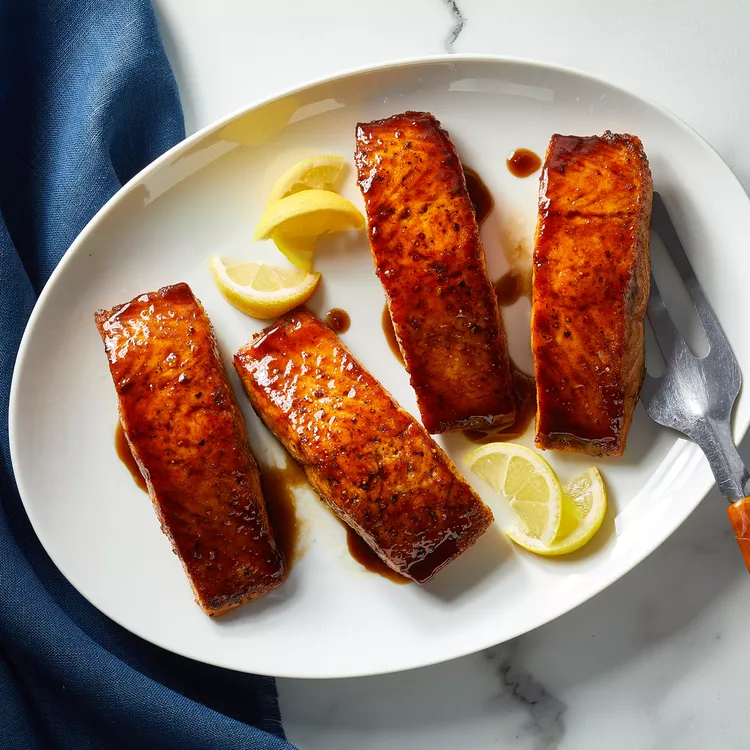

Bourbon Glazed Salmon

Ingredients
- 5 tablespoons bourbon
- 2 tablespoons pure maple syrup
- 1 tablespoon low-sodium soy sauce
- 1/2 teaspoon garlic powder
- 1 1/4 pounds salmon fillet (3/4-inch thick), skin removed and cut into 4 portions
- 1/4 teaspoon salt
- 1/4 teaspoon ground pepper
Directions
- Combine bourbon, maple syrup, soy sauce and garlic powder in a large skillet; bring to a simmer over medium-high heat.
- Sprinkle both sides of salmon pieces with salt and pepper. Add the salmon to the skillet and reduce heat to medium-low. Cook, flipping once and spooning the glaze over the fish a few times, until the salmon is just cooked through, 8 to 10 minutes.
Back to other recipes